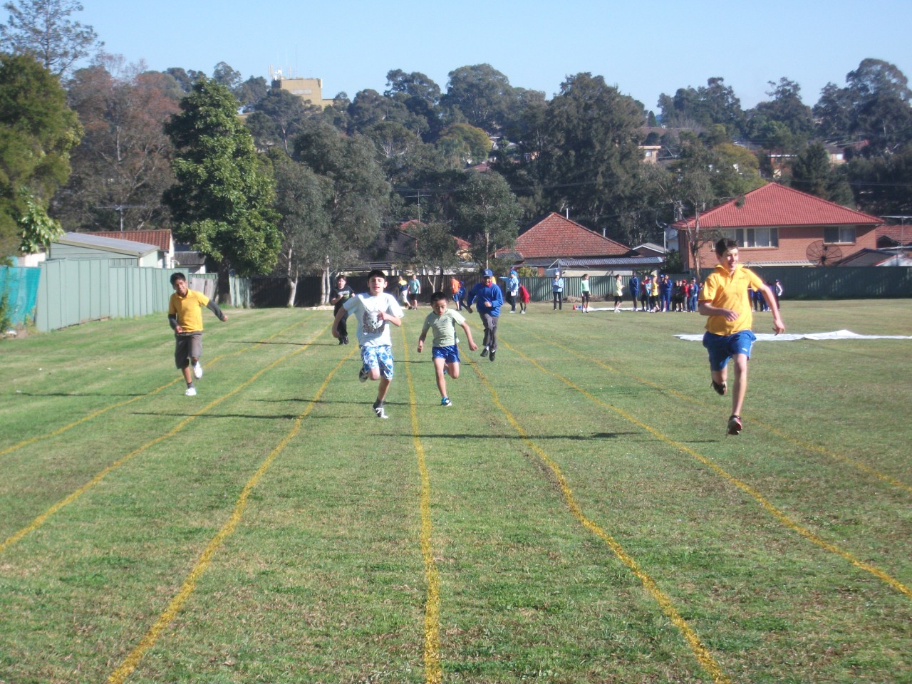

School Oval
Bert Oldfield Public School, established in 1959 and situated in Seven Hills, is a dynamic educational centre set in large, attractive grounds.
The school's mission is to provide all students with opportunities to experience success and to achieve their full potential in a supportive and caring learning environment. The school serves an increasingly diverse local community.
The dedicated staff, supported by the wider community, strive to meet the needs of every child by providing a balance of academic, cultural, sporting and social programs.
School features include excellent literacy and numeracy programs, support for students with English as a second language, a well-equipped computer laboratory, award winning environment programs and effective student welfare programs designed to develop understanding, acceptance, respect and responsibility within each child.